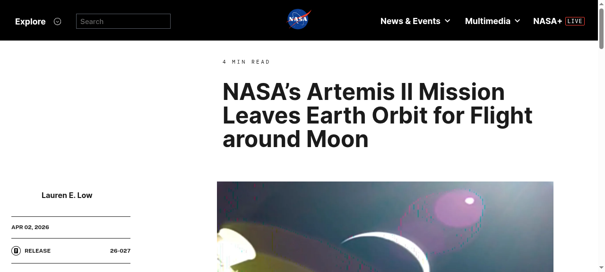
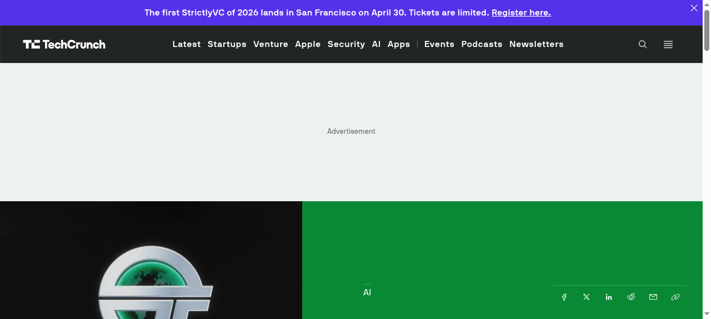

科技晨報

美國NASA的Artemis II任務於2026年4月1日傍晚6:35（美東時間）從甘迺迪太空中心成功發射，四名太空人搭乘獵戶座太空船與SLS火箭升空，展開為期十天的月球飛越任務。這是自1972年阿波羅17號以來，人類首次有太空人近距離飛越月球。根據NASA計算，任務期間太空艙與地球的最大距離將達到252,799英里，一舉打破阿波羅13號創下的紀錄。機組人員包括NASA太空人Reid Wiseman（指揮官）、Victor Glover（駕駛員）及Christina Koch，還有加拿大太空人Jeremy Hansen，這是加拿大太空人首次參與載人月球任務。4月2日，獵戶座太空船執行關鍵的月球轉移燃燒，正式離開地球軌道，朝月球前進。
NASA's Artemis II mission successfully launched on April 1, 2026, at 6:35 PM Eastern Time from Kennedy Space Center, carrying four astronauts aboard the Orion spacecraft atop the SLS rocket. This ten-day lunar flyby mission marks the first time humans have traveled near the Moon since Apollo 17 in 1972. According to NASA's pre-launch calculations, the crew module will reach a maximum distance of 252,799 statute miles from Earth — surpassing the Apollo 13 record. The crew consists of NASA astronauts Reid Wiseman (commander), Victor Glover (pilot), and Christina Koch, along with Canadian Space Agency astronaut Jeremy Hansen, marking the first time a Canadian has participated in a crewed lunar mission. On April 2, the Orion spacecraft executed its critical translunar injection burn, officially leaving Earth orbit and heading toward the Moon.

根據路透社獨家報導，馬斯克旗下的SpaceX已與沙烏地阿拉伯公共投資基金（PIF）展開談判，PIF可能作為SpaceX首次公開上市（IPO）的基礎投資者，斥資約50億美元認購股份。知情人士透露，這筆投資將能防止PIF現有持股（約佔SpaceX不到1%）在IPO過程中被稀釋。SpaceX目前是全球最具價值的私人航太公司，IPO傳聞多年來甚囂塵上。若此次與PIF的談判達成共識，將成為沙烏地在科技與太空領域最大手筆的投資之一，也將為SpaceX的IPO之路注入強心針。雙方談判仍在進行中，最終條款尚未確定。
According to an exclusive Reuters report, Elon Musk's SpaceX has been in discussions with Saudi Arabia's Public Investment Fund (PIF) about taking an anchor stake of approximately $5 billion in SpaceX's upcoming Initial Public Offering (IPO). Sources familiar with the matter said the investment would prevent PIF's existing stake — just under 1% of SpaceX — from being diluted during the IPO process. SpaceX is currently the world's most valuable private aerospace company, and IPO speculation has swirled for years. A deal with PIF would represent one of Saudi Arabia's largest technology and space investments, and would significantly boost SpaceX's path toward going public. Negotiations are ongoing and final terms have yet to be determined.

OpenAI 於本週宣布收購 TBPN（Technology Business Programming Network），這是一個在矽谷內部人士中享有高人氣的線上科技訪談節目，由創辦人兼主持人 Ed Zitron 主導，節目以專訪科技公司CEO和產業領袖聞名。這是 OpenAI 首次收購一家媒體公司，收購金額尚未公開。OpenAI 表示，收購完成後將繼續支持 TBPN 節目營運，並希望借助 TBPN 在科技圈的品牌影響力，改善 OpenAI 在產業輿論中的形象。業界分析指出，在 Anthropic 積極搶攻企業用戶市場的壓力下，OpenAI 此舉意在透過媒體敘事争取更多話語權。TBPN 此前曾多次批評 AI 行業的過度炒作，引發外界對 OpenAI 此舉動機的猜測。
OpenAI announced this week the acquisition of TBPN (Technology Business Programming Network), a popular online tech interview show closely followed by Silicon Valley insiders, hosted by founder Ed Zitron and known for its exclusive interviews with tech CEOs and industry leaders. This marks OpenAI's first acquisition of a media company, with the purchase price remaining undisclosed. OpenAI said it will continue to support TBPN's operations after the deal closes, hoping to leverage the show's strong brand in the tech community to improve its public narrative amid growing competitive pressure from Anthropic in the enterprise market. Industry analysts note that under intensifying pressure to win over enterprise customers, OpenAI appears to be using media narrative as a strategic tool. TBPN had previously been critical of AI industry hype, raising questions about OpenAI's motivations for the acquisition.